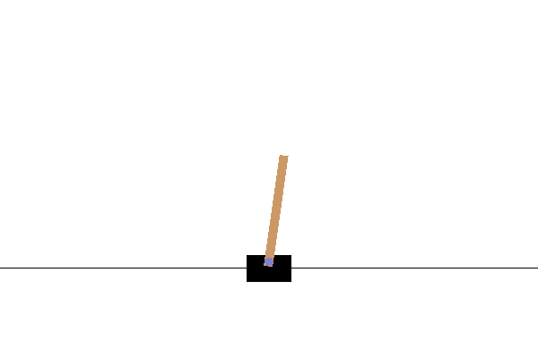

Deep Q Learning (DQN) with MindSpore Reinforcement

summary
To implement an reinforcement learning algorithm with MindSpore Reinforcement, a user needs to:
provide an algorithm configuration, which separates the implementation of the algorithm from its deployment details;
implement the algorithm based on an actor-learner-environment abstraction;
create a session object that executes the implemented algorithm.
This tutorial shows the use of the MindSpore Reinforcement API to implement the Deep Q Learning (DQN) algorithm. Note that, for clarity and readability, only API-related code sections are presented, and irrelevant code is omitted. The source code of the full DQN implementation for MindSpore Reinforcement can be found here.
Specifying the Actor-Learner-Environment Abstraction for DQN
The DQN algorithm requires two deep neural networks, a policy network for approximating the action-value function (Q function) and a target network for stabilising the training. The policy network is the strategy on how to act on the environment, and the goal of the DQN algorithm is to train the policy network for maximum reward. In addition, the DQN algorithm uses an experience replay technique to maintain previous observations for off-policy learning, where an actor uses different behavioural policies to act on the environment.
MindSpore Reinforcement uses an algorithm configuration to specify the logical components (Actor, Learner, Policy and Network, Collect Environment, Eval Environment, Replayuffer) required by the DQN algorithm and the associated hyperparameters. It can execute the algorithm with different strategies based on the provided configuration, which allows the user to focus on the algorithm design.
The algorithm configuration is a Python dictionary that specifies how to construct different components of the DQN algorithm. The hyper-parameters of each component are configured in separate Python dictionaries. The DQN algorithm configuration can be defined as follows:
algorithm_config = {
'actor': {
'number': 1, # Number of Actor
'type': DQNActor, # The Actor class
'policies': ['init_policy', 'collect_policy', 'evaluate_policy'], # The policy used to choose action
},
'learner': {
'number': 1, # Number of Leaarner
'type': DQNLearner, # The Learner class
'params': learner_params, # The parameters of Learner
'networks': ['policy_network', 'target_network'] # The networks which is used by Learner
},
'policy_and_network': {
'type': DQNPolicy, # The Policy class
'params': policy_params # The parameters of Policy
},
'collect_environment': {
'number': 1, # Number of Collect Environment
'type': GymEnvironment, # The Collect Environment class
'params': collect_env_params # The parameters of Collect Environment
},
'eval_environment': {
'number': 1, # Same as Collect Environment
'type': GymEnvironment,
'params': eval_env_params
},
'replay_buffer': {'number': 1, # Number of ReplayBuffer
'type': ReplayBuffer, # The ReplayBuffer class
'capacity': 100000, # The capacity of ReplayBuffer
'data_shape': [(4,), (1,), (1,), (4,)], # Data shape of ReplayBuffer
'data_type': [ms.float32, ms.int32, ms.float32, ms.float32], # Data type off ReplayBuffer
'sample_size': 64}, # Sample size of ReplayBuffer
}
The configuration defines six top-level entries, each corresponding to an algorithmic component: actor, learner, policy, replaybuffer and two environments. Each entry corresponds to a class, which must be defined by the user to implement the DQN algorithm’s logic.
A top-level entry has sub-entries that describe the component. The number entry defines the number of instances of the component used by the algorithm. The type entry refers to the name of the Python class that must be defined to implement the component. The params entry provides the necessary hyper-parameters for the component. The policies entry defines the policies used by the component. The networks in earner entry lists all neural networks used by this component. In the DQN example, only actors interact with the environment. The reply_buffer defines the capacity, shape, sample size and data type of the replay buffer.
For the DQN algorithm, we configure one actor 'number': 1, its Python class 'type': DQNActor, and three behaviour policies 'policies': ['init_policy', 'collect_policy', 'evaluate_policy'].
Other components are defined in a similar way – please refer to the complete DQN code example and the MindSpore Reinforcement API documentation for more details.
Note that MindSpore Reinforcement uses a single policy class to define all policies and neural networks used by the algorithm. In this way, it hides the complexity of data sharing and communication between policies and neural networks.
In train.py, MindSpore Reinforcement executes the algorithm in the context of a session. A session allocates resources (on one or more cluster machines) and executes the compiled computational graph. A user passes the algorithm configuration to instantiate a Session class:
from mindspore_rl.core import Session
dqn_session = Session(dqn_algorithm_config)
Invoke the run method and pass corresponding parameters to execute the DQN algorithm. class_type is user-defined Trainer class, which will be described later, episode is the iteration times of the algorithm, params are the parameters that is used in the trainer class. It is written in configuration file. For more detail, please check config.py file in the code example. Callbacks define some metrics methods. It is described more detailly in Callbacks part of API documentation.
from src.dqn_trainer import DQNTrainer
from mindspore_rl.utils.callback import CheckpointCallback, LossCallback, EvaluateCallback
loss_cb = LossCallback()
ckpt_cb = CheckpointCallback(50, config.trainer_params['ckpt_path'])
eval_cb = EvaluateCallback(10)
cbs = [loss_cb, ckpt_cb, eval_cb]
dqn_session.run(class_type=DQNTrainer, episode=episode, params=config.trainer_params, callbacks=cbs)
To leverage MindSpore’s computational graph feature, users set the execution mode to GRAPH_MODE.
import mindspore as ms
ms.set_context(mode=ms.GRAPH_MODE)
Methods that are annotated with @jit will be compiled into the MindSpore computational graph for auto-parallelisation and acceleration. In this tutorial, we use this feature to implement an efficient DQNTrainer class.
Defining the DQNTrainer class
The DQNTrainer class expresses how the algorithm runs. For example, iteratively collects experience through iteracting with environment and insert to replaybuffer, then obtain the data from the replay buffer to trains the targeted models. It must inherit from the Trainer class, which is part of the MindSpore Reinforcement API.
The Trainer base class contains an MSRL (MindSpore Reinforcement) object, which allows the algorithm implementation to interact with MindSpore Reinforcement to implement the training logic. The MSRL class instantiates the RL algorithm components based on the previously defined algorithm configuration. It provides the function handlers that transparently bind to methods of actors, learners, or the replay buffer object, as defined by users. As a result, the MSRL class enables users to focus on the algorithm logic, while it transparently handles object creation, data sharing and communication between different algorithmic components on one or more workers. Users instantiate the MSRL object by creating the previously mentioned Session object with the algorithm configuration.
The DQNTrainer must overload the train_one_episode for training, evaluate for evaluation and trainable_varaible for saving checkpoint. In this tutorial, it is defined as follows:
class DQNTrainer(Trainer):
def __init__(self, msrl, params):
...
super(DQNTrainer, self).__init__(msrl)
def trainable_variables(self):
"""Trainable variables for saving."""
trainable_variables = {"policy_net": self.msrl.learner.policy_network}
return trainable_variables
@ms.jit
def init_training(self):
"""Initialize training"""
state = self.msrl.collect_environment.reset()
done = self.false
i = self.zero_value
while self.less(i, self.fill_value):
done, _, new_state, action, my_reward = self.msrl.agent_act(
trainer.INIT, state)
self.msrl.replay_buffer_insert(
[state, action, my_reward, new_state])
state = new_state
if done:
state = self.msrl.collect_environment.reset()
done = self.false
i += 1
return done
@ms.jit
def evaluate(self):
"""Policy evaluate"""
total_reward = self.zero_value
eval_iter = self.zero_value
while self.less(eval_iter, self.num_evaluate_episode):
episode_reward = self.zero_value
state = self.msrl.eval_environment.reset()
done = self.false
while not done:
done, r, state = self.msrl.agent_act(trainer.EVAL, state)
r = self.squeeze(r)
episode_reward += r
total_reward += episode_reward
eval_iter += 1
avg_reward = total_reward / self.num_evaluate_episode
return avg_reward
User will call the train method in base class. It trains the models for the specified number of episodes (iterations), with each episode calling the user-defined train_one_episode method. Finally, the train method evaluates the policy to obtain a reward value by calling the evaluate method.
In each iteration of the training loop, the train_one_episode method is invoked to train an episode:
@ms.jit
def train_one_episode(self):
"""Train one episode"""
if not self.inited:
self.init_training()
self.inited = self.true
state = self.msrl.collect_environment.reset()
done = self.false
total_reward = self.zero
steps = self.zero
loss = self.zero
while not done:
done, r, new_state, action, my_reward = self.msrl.agent_act(
trainer.COLLECT, state)
self.msrl.replay_buffer_insert(
[state, action, my_reward, new_state])
state = new_state
r = self.squeeze(r)
loss = self.msrl.agent_learn(self.msrl.replay_buffer_sample())
total_reward += r
steps += 1
if not self.mod(steps, self.update_period):
self.msrl.learner.update()
return loss, total_reward, steps
The @jit annotation states that this method will be compiled into a MindSpore computational graph for acceleration. To support this, all scalar values must be defined as tensor types, e.g. self.zero_value = Tensor(0, mindspore.float32).
The train_one_episode method first calls the reset method of environment, self.msrl.collect_environment.reset() function to reset the environment. It then collects the experience from the environment with the msrl.agent_act function handler and inserts the experience data in the replay buffer using the self.msrl.replay_buffer_insert function. Afterwards, it invokes the self.msrl.agent_learn function to train the target model. The input of self.msrl.agent_learn is a set of sampled results returned by self.msrl.replay_buffer_sample.
The replay buffer class, ReplayBuffer, is provided by MindSpore Reinforcement. It defines insert and sample methods to store and sample the experience data in a replay buffer, respectively. Please refer to the complete DQN code example for details.
Defining the DQNPolicy class
To implement the neural networks and define the policies, a user defines the DQNPolicy class:
class DQNPolicy():
def __init__(self, params):
self.policy_network = FullyConnectedNet(
params['state_space_dim'],
params['hidden_size'],
params['action_space_dim'],
params['compute_type'])
self.target_network = FullyConnectedNet(
params['state_space_dim'],
params['hidden_size'],
params['action_space_dim'],
params['compute_type'])
The constructor takes as input the previously-defined hyper-parameters of the Python dictionary type in config.py, policy_params.
Before defining the policy network and the target network, users must define the structure of the neural networks using MindSpore operators. For example, they may be objects of the FullyConnectedNetwork class, which is defined as follows:
class FullyConnectedNetwork(mindspore.nn.Cell):
def __init__(self, input_size, hidden_size, output_size, compute_type=mstype.float32):
super(FullyConnectedNet, self).__init__()
self.linear1 = nn.Dense(
input_size,
hidden_size,
weight_init="XavierUniform").to_float(compute_type)
self.linear2 = nn.Dense(
hidden_size,
output_size,
weight_init="XavierUniform").to_float(compute_type)
self.relu = nn.ReLU()
The DQN algorithm uses a loss function to optimize the weights of the neural networks. At this point, a user must define a neural network used to compute the loss function. This network is specified as a nested class of DQNLearner. In addition, an optimizer is required to train the network. The optimizer and the loss function are defined as follows:
class DQNLearner(Learner):
"""DQN Learner"""
class PolicyNetWithLossCell(nn.Cell):
"""DQN policy network with loss cell"""
def __init__(self, backbone, loss_fn):
super(DQNLearner.PolicyNetWithLossCell,
self).__init__(auto_prefix=False)
self._backbone = backbone
self._loss_fn = loss_fn
self.gather = P.GatherD()
def construct(self, x, a0, label):
"""constructor for Loss Cell"""
out = self._backbone(x)
out = self.gather(out, 1, a0)
loss = self._loss_fn(out, label)
return loss
def __init__(self, params=None):
super(DQNLearner, self).__init__()
...
optimizer = nn.Adam(
self.policy_network.trainable_params(),
learning_rate=params['lr'])
loss_fn = nn.MSELoss()
loss_q_net = self.PolicyNetWithLossCell(self.policy_network, loss_fn)
self.policy_network_train = nn.TrainOneStepCell(loss_q_net, optimizer)
self.policy_network_train.set_train(mode=True)
...
The DQN algorithm is an off-policy algorithm that learns using a epsilon-greedy policy. It uses different behavioural policies for acting on the environment and collecting data. In this example, we use the RandomPolicy to initialize the training, the EpsilonGreedyPolicy to collect the experience during the training, and the GreedyPolicy to evaluate:
class DQNPolicy():
def __init__(self, params):
...
self.init_policy = RandomPolicy(params['action_space_dim'])
self.collect_policy = EpsilonGreedyPolicy(self.policy_network, (1, 1), params['epsi_high'],
params['epsi_low'], params['decay'], params['action_space_dim'])
self.evaluate_policy = GreedyPolicy(self.policy_network)
Since the above three behavioural policies are common for a range of RL algorithms, MindSpore Reinforcement provides them as reusable building blocks. Users may also define their own algorithm-specific behavioural policies.
Note that the names of the methods and the keys of the parameter dictionary must be consistent with the algorithm configuration defined earlier.
Defining the DQNActor class
To implement the DQNActor, a user defines a new actor component that inherits from the Actor class provided by MindSpore Reinforcement. They must then overload the methods in Actor class:
class DQNActor(Actor):
...
def act(self, phase, params):
if phase == 1:
# Fill the replay buffer
action = self.init_policy()
new_state, reward, done = self._environment.step(action)
action = self.reshape(action, (1,))
my_reward = self.select(done, self.penalty, self.reward)
return done, reward, new_state, action, my_reward
if phase == 2:
# Experience collection
self.step += 1
ts0 = self.expand_dims(params, 0)
step_tensor = self.ones((1, 1), ms.float32) * self.step
action = self.collect_policy(ts0, step_tensor)
new_state, reward, done = self._environment.step(action)
action = self.reshape(action, (1,))
my_reward = self.select(done, self.penalty, self.reward)
return done, reward, new_state, action, my_reward
if phase == 3:
# Evaluate the trained policy
ts0 = self.expand_dims(params, 0)
action = self.evaluate_policy(ts0)
new_state, reward, done = self._eval_env.step(action)
return done, reward, new_state
self.print("Phase is incorrect")
return 0
The three methods act on the specified environment with different policies, which map states to actions. The methods take as input a tensor-typed value and return the trajectory from the environment.
A user should implement an environment class that defines a step method. To interact with an environment, the actor uses the step method, which collects a triplet as the return value. The triplet includes a new state after applying the action, an obtained reward as a float, and a boolean flag to reset the environment. For example, if using the OpenAI Gym library, MindSpore Reinforcement refactors it for computational-graph acceleration and provides the class GymEnvironment. Users specify the used environments in the algorithm configuration.
The constructor of the DQNActor class defines the environment, the reply buffer, the polices, and the networks. It takes as input the dictionary-typed parameters, which were defined in the algorithm configuration. Below, we only show the initialisation of the environment, other attributes are assigned in the similar way:
class DQNActor(Actor):
def __init__(self, params):
self._environment = params['collect_environment']
self._eval_env = params['eval_environment']
...
Defining the DQNLearner class
To implement the DQNLearner, a class must inherit from the Learner class in the MindSpore Reinforcement API and overload the learn method:
class DQNLearner(Learner):
...
def learn(self, experience):
"""Model update"""
s0, a0, r1, s1 = experience
next_state_values = self.target_network(s1)
next_state_values = next_state_values.max(axis=1)
r1 = self.reshape(r1, (-1,))
y_true = r1 + self.gamma * next_state_values
# Modify last step reward
one = self.ones_like(r1)
y_true = self.select(r1 == -one, one, y_true)
y_true = self.expand_dims(y_true, 1)
success = self.policy_network_train(s0, a0, y_true)
return success
Here, the learn method takes as input the trajectory (sampled from a reply buffer) to train the policy network. The constructor assigns the network, the policy, and the discount rate to the DQNLearner, by receiving a dictionary-typed configuration from the algorithm configuration:
class DQNLearner(Learner):
def __init__(self, params=None):
super(DQNLearner, self).__init__()
self.policy_network = params['policy_network']
self.target_network = params['target_network']
Execute and view results
Execute script train.py to start DQN model training.
cd example/dqn/
python train.py
The execution results are shown below:
-----------------------------------------
Evaluation result in episode 0 is 95.300
-----------------------------------------
Episode 0, steps: 33.0, reward: 33.000
Episode 1, steps: 45.0, reward: 12.000
Episode 2, steps: 54.0, reward: 9.000
Episode 3, steps: 64.0, reward: 10.000
Episode 4, steps: 73.0, reward: 9.000
Episode 5, steps: 82.0, reward: 9.000
Episode 6, steps: 91.0, reward: 9.000
Episode 7, steps: 100.0, reward: 9.000
Episode 8, steps: 109.0, reward: 9.000
Episode 9, steps: 118.0, reward: 9.000
...
...
Episode 200, steps: 25540.0, reward: 200.000
Episode 201, steps: 25740.0, reward: 200.000
Episode 202, steps: 25940.0, reward: 200.000
Episode 203, steps: 26140.0, reward: 200.000
Episode 204, steps: 26340.0, reward: 200.000
Episode 205, steps: 26518.0, reward: 178.000
Episode 206, steps: 26718.0, reward: 200.000
Episode 207, steps: 26890.0, reward: 172.000
Episode 208, steps: 27090.0, reward: 200.000
Episode 209, steps: 27290.0, reward: 200.000
-----------------------------------------
Evaluation result in episode 210 is 200.000
-----------------------------------------
